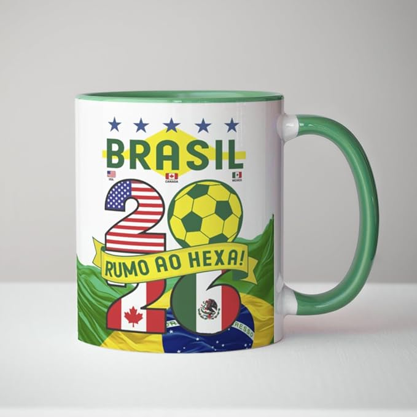

Lojinha oficial do torcedor (clique na imagem para comprar)
-
Camisa oficial da Seleção 2026

Camisa Nike lançamento 2026, com tecnologia Dri-FIT, tecido leve e número 10 nas costas. Use a amarelinha com orgulho!
-
Bandeira oficial do Brasil (tamanho gigante)
Bandeira oficial de 2x1,5m, ideal para estádios, bares e festas da torcida brasileira.
-
Caneca personalizada "Rumo ao Hexa 2026"

Caneca de porcelana 350ml com a frase "Rumo ao Hexa 2026" e o escudo da CBF. Perfeita para o café da manhã já entrando no clima!